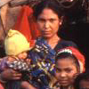

ShareCompartir
ShareCompartir
Medical Examination of Immigrants and Refugees
Background
Under the authority of the Immigration and Nationality Act (INA) and the Public Health Service Act, the Secretary of Health and Human Services promulgates regulations outlining the requirements for the medical examination of aliens seeking admission into the United States. The Division of Global Migration and Quarantine provides the Department of State (DOS) and the U.S. Citizenship and Immigration Services (USCIS) with medical screening guidelines for all examining physicians, which outline in detail the scope of the medical examination. The purpose of the medical examination is to identify, for the DOS and USCIS, applicants with inadmissible health-related conditions.
Topics:
- Frequently Asked Questions
- Tuberculosis Screening for International Adoptees FAQs
- Diseases and Vaccines Included Communicable Diseases of Public Health Significance and Vaccine-Preventable Diseases
- Medical Waivers and INS form, I-601
- Laws and Regulations
Technical Instructions, Information and Updates
Medical screening guidelines (referred to as Technical Instructions) for all examining physicians, which outline in detail the scope of the medical examination for U.S.
A medical examination is mandatory for all refugees coming to the U.S. and all applicants outside the U.S. applying for an immigrant visa. Aliens in the United States who apply for adjustment of their immigration status to that of permanent resident are also required to be medically examined. Aliens applying for nonimmigrant visas (temporary admission) may be required to undergo a medical examination at the discretion of the consular officer overseas or immigration officer at the U.S. port of entry, if there is reason to suspect that an inadmissible health-related condition exists.
Outside the U.S., medical examinations are performed by approximately 600 physicians (panel physicians) selected by DOS consular officials. In the U.S., medical examinations are performed by approximately 5,000 physicians (called civil surgeons) designated by district directors of the USCIS.
The Division of Global Migration and Quarantine (DGMQ) is responsible for providing the Technical Instructions to civil surgeons and panel physicians. DGMQ does not maintain a listing of civil surgeons and/or panel physicians since civil surgeons are designated by District Directors of the U.S. Citizenship and Immigration Services (USCIS) and panel physicians are selected by the Department of State (DOS).
DGMQ provides the technical instructions and guidance to physicians conducting the medical examination for immigration. These instructions are developed in accordance with Section 212(a)(1)(A) of the Immigration and Nationality Act (INA), which states those classes of aliens ineligible for visas or admission based on health-related grounds. The health-related grounds include those aliens who have a communicable disease of public health significance, who fail to present documentation of having received vaccination against vaccine-preventable diseases, who have or have had a physical or mental disorder with associated harmful behavior, and who are drug abusers or addicts.
If an immigrant or refugee has an inadmissible health-related condition, a waiver is required for the applicant to come to the United States. This is also the case for an applicant who is in the United States applying for adjustment of status to permanent residence. Section 212(g) of the INA provides for the waiver of the health-related grounds of inadmissibility.
- Technical Instructions for Medical Examinations of Aliens
- Communicable Diseases of Public Health Significance
- Vaccine-Preventable Diseases
- Health-Related Waivers
Additional immigration information and regulations are available from the U.S. Citizenship and Immigration Services (USCIS) .
Contact Us:
- Centers for Disease Control and Prevention
1600 Clifton Rd
Atlanta, GA 30333 - 800-CDC-INFO
(800-232-4636)
TTY: (888) 232-6348 - Contact CDC–INFO